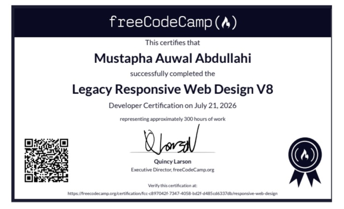

My Academic freeCodeCamp Journey
An engaging overview of the rigorous programming steps followed to earn the "Responsive Web Design" credentials.
Deconstructing the responsive canvas
As a Computer Science student at Northwest University, Kano, seeking specialized analytics roles, I recognized early on that web-based interfaces are the primary delivery platform for modern business insights. Understanding the mechanics of web design became a top priority.
This path led me to the rigorous, hands-on syllabus of the freeCodeCamp "Responsive Web Design" program. Over several weeks, I tackled dense curriculum challenges covering semantic markup hierarchies, accessible design constraints, and CSS styling layouts.
"Developing simple visual code is easy, but styling structural systems to load dynamically across variable screen layouts demands precise, algorithmic programming."
I learned to build complex grid containers, set up flexible layouts, and design responsive views. This training shaped my approach to layout design, which I used directly when coding this personal web space.
Official verification: You can view the authentic program records directly through the official freeCodeCamp portal using the verification link below.

Issued by the freeCodeCamp Global Academy

Certified Professional:
Mustapha Auwalu Abdullahi